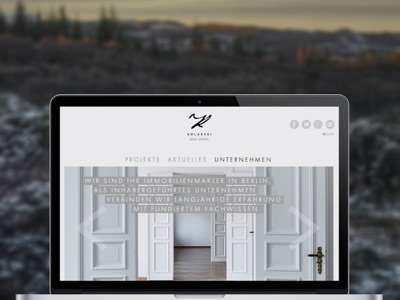

Unsere Webseiten passen sich an alle Displaygrößen an und sehen auf allen Geräten nahezu perfekt aus. Durch unseren professionellen Entwicklungsprozess und durch das Einhalten von im Web gültigen Standards sind auch Seiten mit hohen Ansprüchen an Optik und Verhalten möglich, ohne die Kompatibilität zu älteren Browsern wie Smartphones mit Android 2.3 oder Internet Explorer 9 einzuschränken.

Beispielsweise haben wir Projekte mit Parallax-Effekten auf Smartphones realisiert, oder nutzen Bildergalerien, die Sie mit Wisch-Gesten steuern können. Als Backend-Systeme dienen uns regelmäßig Wordpress, ExpressionEngine oder selbst entwickelte Systeme auf PHP- oder Node.js-Basis.
Unser Entwicklungsprozess beinhaltet die Minifizierung von Stylsheets und Scripten, bei großen hochauflösenden Bildern kommen progressive Lademethoden zum Einsatz. Wir achten auf die Auszeichnung der korrekten Meta-Daten, um optimale Ergebnisse beim Teilen über Facebook, Twitter und Google+ zu erreichen und um die Darstellung auf den Homescreens von Android, iOS und Windows Phone zu steuern.
{% for cta in site.ctas %} {% if cta.lang == page.lang %} {% if cta.id == 'contact-responsive-website' %} {% include cta-plain.html %} {% endif %} {% endif %} {% endfor %}
Durch unser Device Lab mit über 25 verschiedenen Testgeräten – vom Android-Smartphone mit der Betriebsystem-Version 2.3.6 und 240x320-Display über Windows Phones bis zum MacBook mit Retina-Display und 27-Zoll-Monitor – werden Ihre Webseiten vor der Veröffentlichung intensiv getestet.
Wo es möglich ist und die Kompatibilität nicht einschränkt, nutzen wir die Hardwarebeschleunigung der Geräte und Browser. Das Ziel unserer Projekte ist immer die möglichst große Zugänglichkeit und eine schnelle Ladezeit der Seiten. Während unserer Arbeit an Projekten bilden wir uns ständig weiter und verbessern kontinuierlich unseren Prozess – eine Arbeitsweise für die uns unsere Arbeitgeber schätzen und die uns motiviert, ständig das Beste zu geben.
Beispiele für schöne Seiten, die in enger Zusammenarbeit mit unseren Auftraggebern Razorfish und n3vision entstanden sind:
Audi TT Car Configurator mit WebGL, Canvas und CSS3-Animationen: microsites.audi.com/tt/
WebGL- und Canvas-Animationen für den Audi Q7: microsites.audi.com/q7mapofgreatness/
Parallax-Effekte auf allen Geräten: lychener35.de
Wordpress mit Custom-Post-Types zum Archivieren von Referenzen: kolarski.de
Responsiver Vorhangeffekt mit Video, Bildergalerie und Kontaktformular swin112.com
Mobile-first Landing-Page: Corpus Sireo
Animierte Webseite mit responsive Lightbox- und Slideshow-Effekten: Jachimowicz Group
Responsive React Portfolio Webseite für Sarah Broßeder: sarah-brosseder.de